Assignment 4: Utter Chaos (a.k.a. Subtractive Manufacturing)
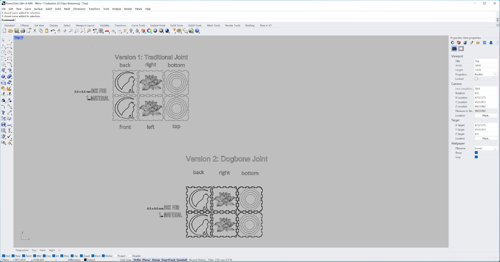
Here is all the documentation for assignment 4. I believe this assignment was under a Halloween curse. Everything that could go wrong - did.
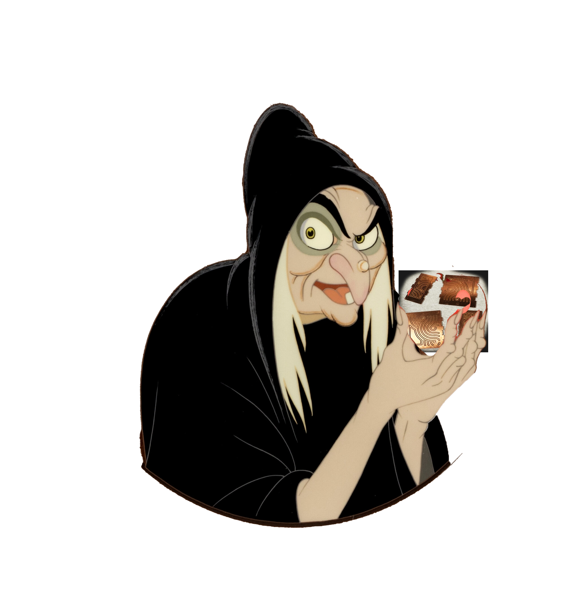
Things started out okay. First I worked on the dogbone joints in Rhino - first just trying to get the shape down, and then trimming them from the larger box side shapes in various measurements (shown: 3cm).
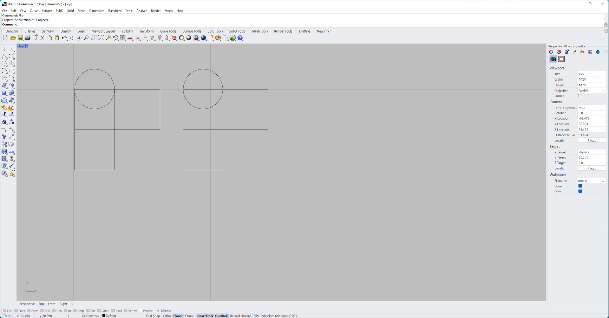
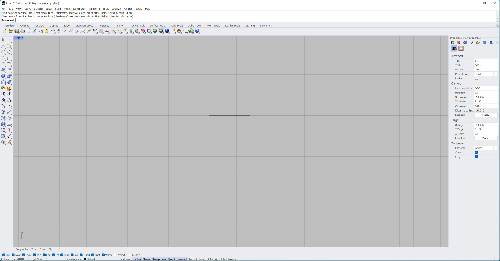
I created two separate box patterns in Rhino, one with dogbone joints, and one without. Both are square boxes, which started at 4x4cm, but ended up at 6x6cm. They have engravings planned for each side - a cat for the front and back, a lotus for the right and left, and circles for the top and bottom.
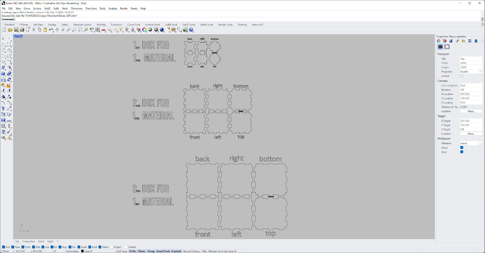
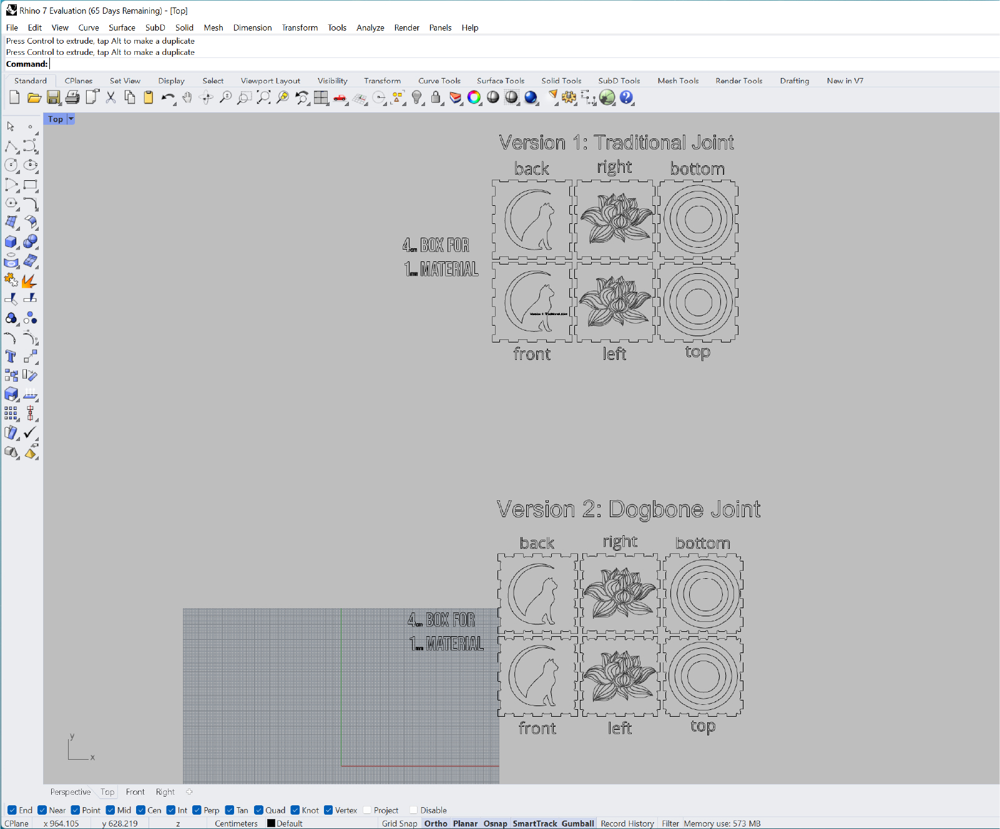
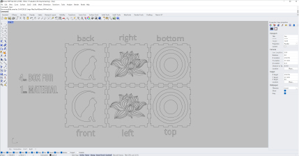
Next thing to do was to try a paper model, just to see if this could be successful:
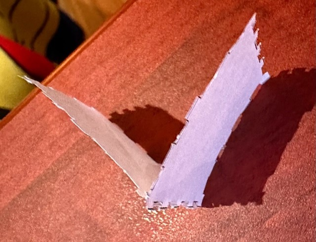
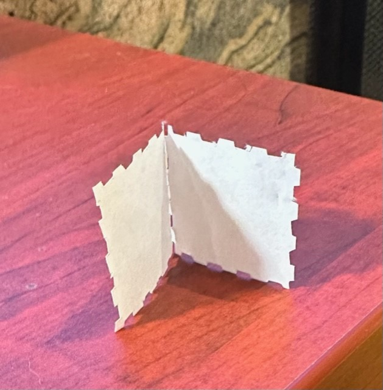
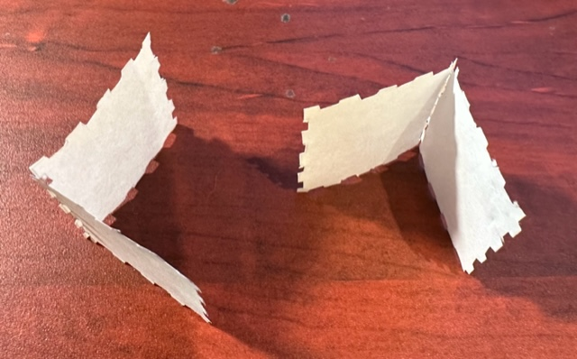
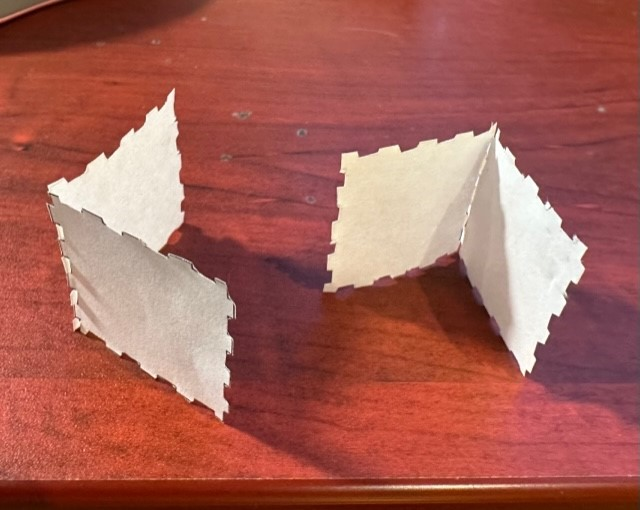
I created my engraving designs in Illustrator and imported them into Rhino. When I started to upload my Rhino files into KiCAD to create Gerber files, I had to handle these with care, as they did not transfer the journey well. I often had to put them back together, even if I had rasterized them in AI.
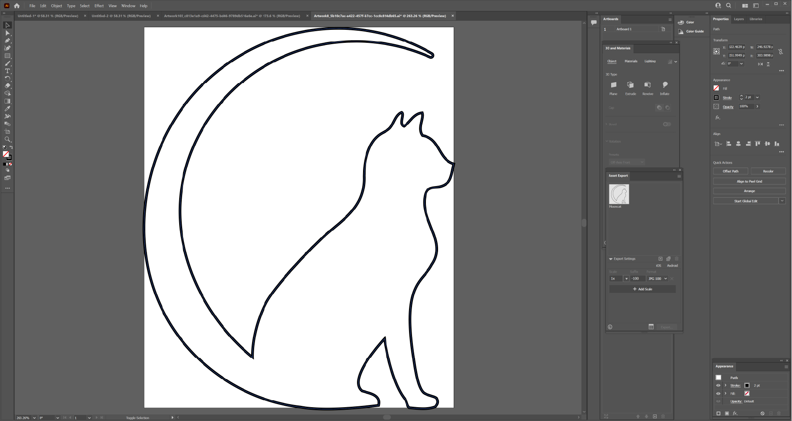
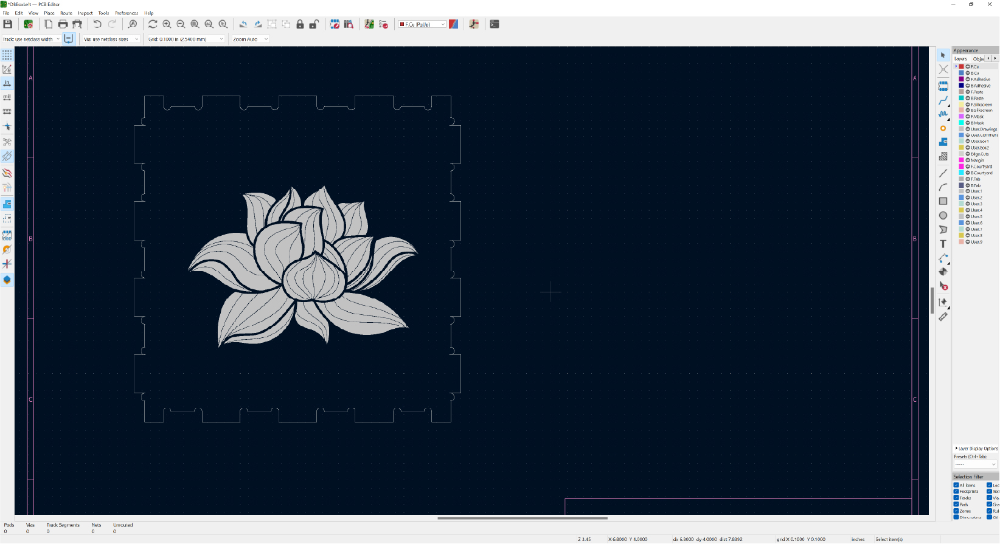
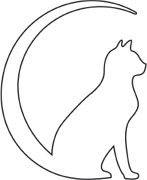
At that point I started converting my files in KiCad, using the 'Plot' feature, into Gerber files. These would be ready for Bantam, when I went to the Mill.
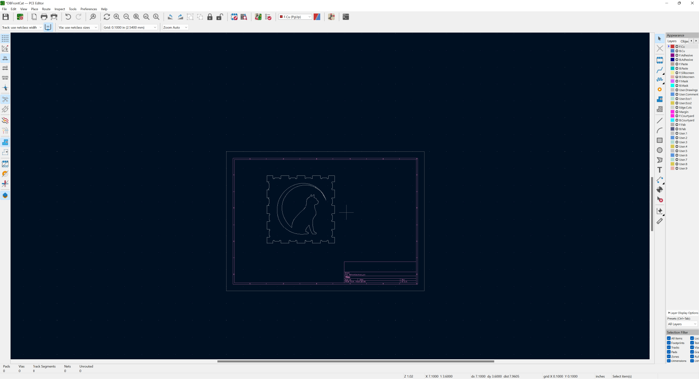

I headed to the Mill for what would be my first try at using the CNC mills to cut and engrave my box sides for assembly. It turned out that I had somehow mismeasured (after using the grids in Rhino, set to mm) my box sides!

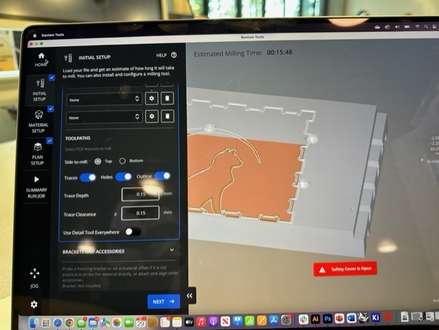
Kudos to Juntao for helping me on Discord during this mess, but the only thing I could do was to go home - there was no way we could find to resize files in KiCAD or Bantam, and my Rhino files were at home (I don't like to work in Rhino on my Macbook).
I came home to resize my files. I purchased my own pack of FR1 and double-sided tape so I could make one side of the box per piece and still have enough for my protective layer. I changed the size of everything to be 6x6cm, with the engravings at 5x5cm (though I worked in mm).

On Monday I returned to the Mill with my new files (including the Rhino files), set to cut the box sides and do my engraving this time. I tried two CNC mills and 4 different bits (in 2 sizes, since Bantam kept telling me I needed 2 sizes).
One mill simply would not allow my material to be perforated, no matter how much I reset the homing settings and traded out bits. I switched to a different mill, and had the opposite problem, the bit worked so hard through the material that it ripped off even the protective layer, and no amount of double-sided tape would keep things in place for it to cut.
This was very depressing, as I was able to get my box sides placed correctly, though Bantam would not distinguish between the edge cut piece and engraved piece (user drawing), so I could not set my engravings to, well, engrave.
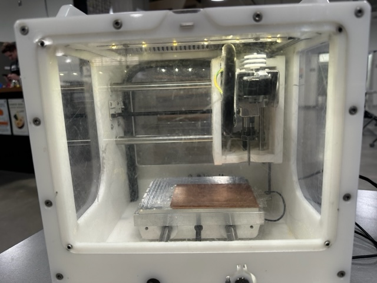
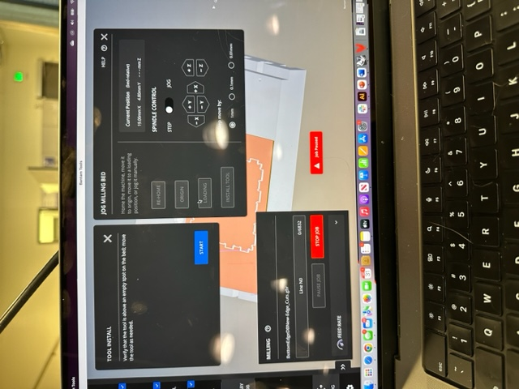
 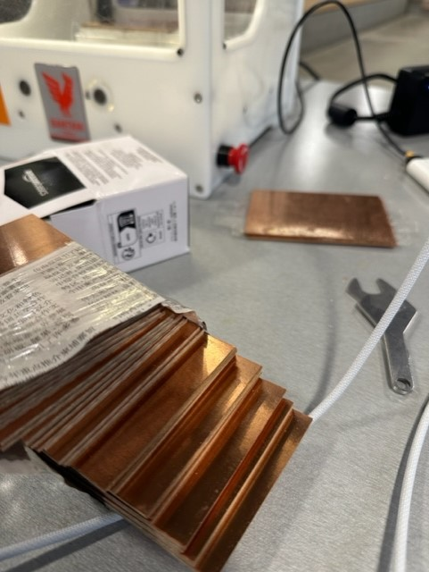
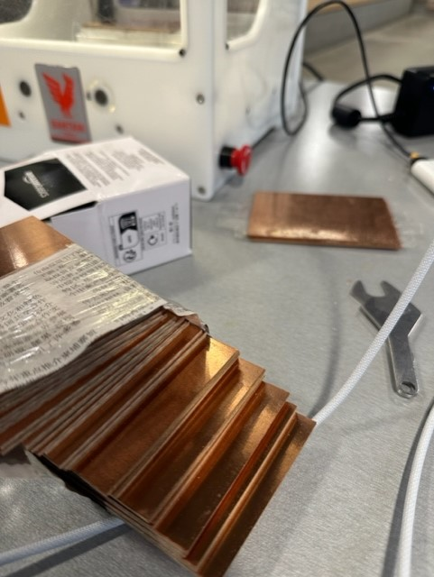
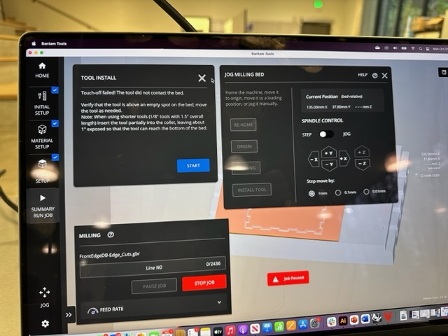
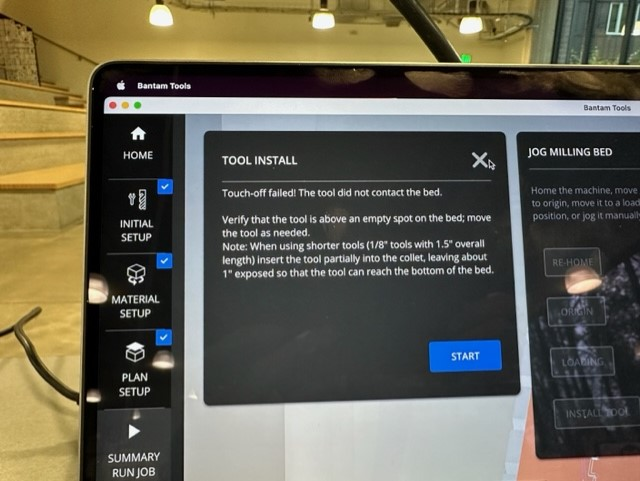
I ran out of time. I have been feeling sick throughout this entire assignment, and I'd had enough. Nobody in the Mill knew how to help me, and I was out of ideas:
It was time for the Last Resort, the 3D printer. I started to print pieces, and was up until 4am on Tuesday morning, until the nozzle got clogged. I am still, as of 1pm Tuesday, trying to fix this.
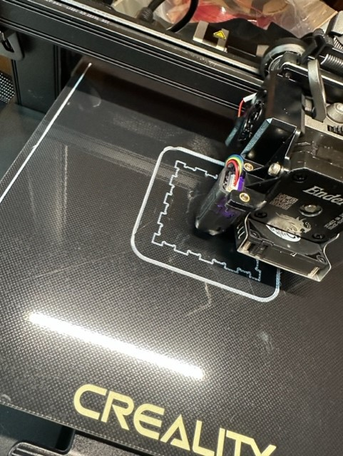
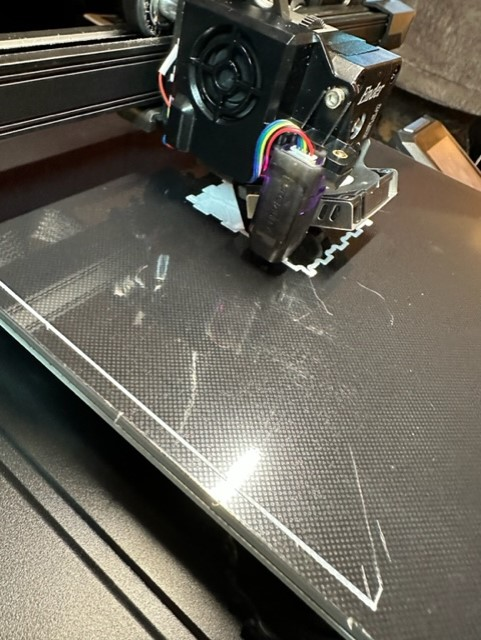
This is what I have ended up with:
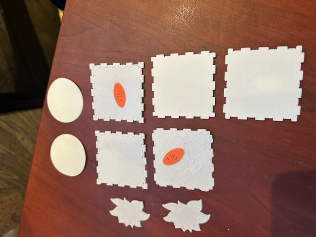
It was starting to work, though!
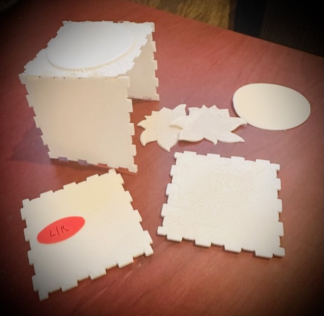
New3DRhinoSourceFile.3dm
BottomEdgeDBNew-Edge_Cuts.gbr
Cat-User_Drawings.gbr
Circles-User_Drawings.gbr
EdgeBackDB-Edge_Cuts.gbr
FrontEdgeDB-Edge_Cuts.gbr
Lotus-User_Drawings.gbr
RightEdgeDB-Edge_Cuts.gbr
TopEdgeDBNew-Edge_Cuts.gbr